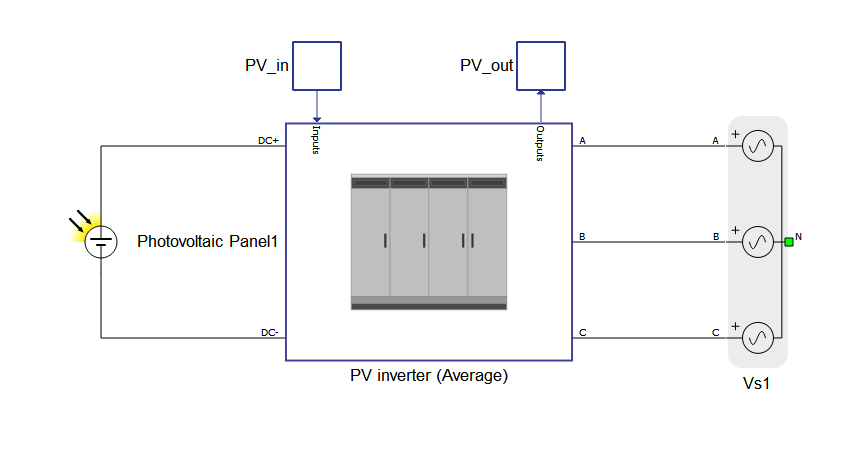
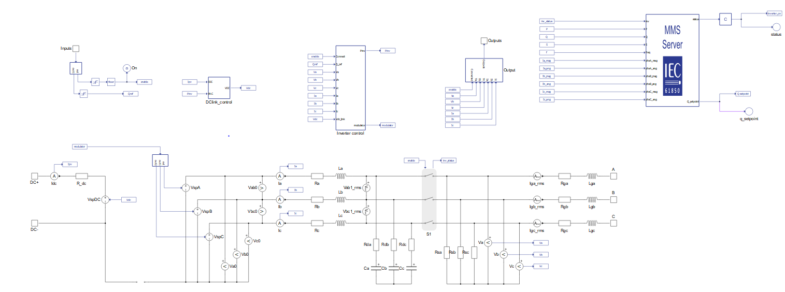
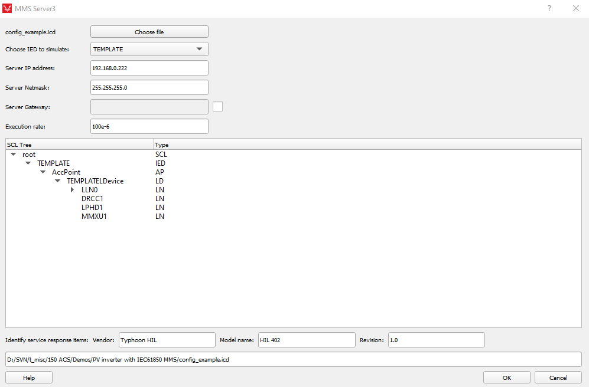
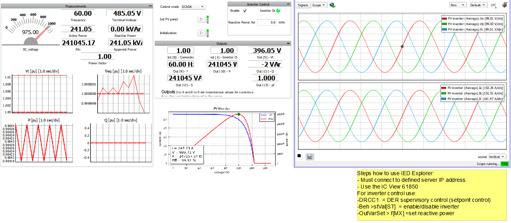
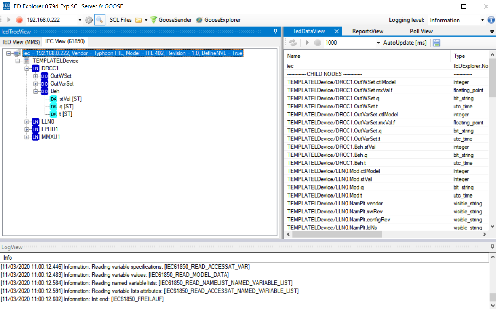
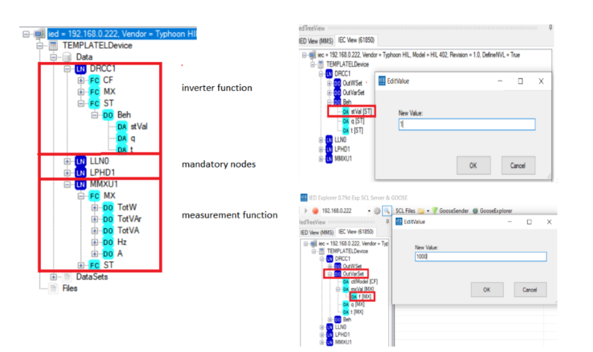
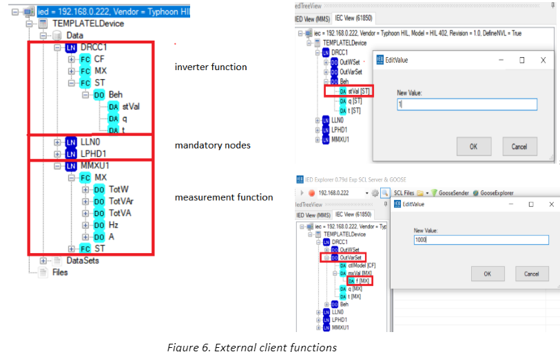
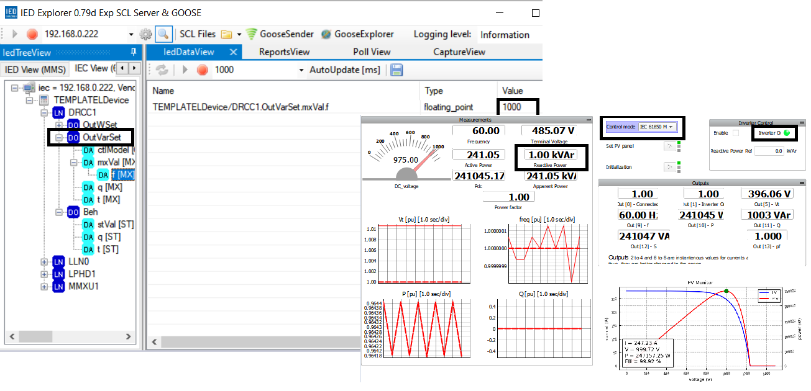

PV inverter with IEC 61850 MMS
Demonstration of remote control of a PV inverter by IEC 61850 MMS
Introduction
The main objective of the IEC 61850 standard is to enable substation automation by standardizing communication between devices from different manufacturers. Previously, each vendor had its own protocol and only devices from the same vendor could communicate together, which made combining different devices together difficult. To enable this communication, IEC 61850 standardized the naming and structure of substations so that all devices could speak the same language. The standard is object oriented and uses a special language called the Substation Configuration Language (SCL) to define the substation structure. Also, the standard defines multiple protocols to allow for different types of communication (e.g. Goose, MMS, Sampled Values).
The Manufacturing Message Specification (MMS) is supported by all Typhoon HIL devices. It uses the Linux operating system. On HIL devices that have two Ethernet connectors, it is always necessary to use the bottom connector (as is the case for all protocols which use the Linux operating system). MMS uses TCP/IP, and for this reason it is slower than either Goose protocol or Sampled Values protocol. MMS protocol is a higher-level protocol used mostly for reporting and controlling as well as in SCADA systems. The MMS protocol is implemented through a MMS Server inside the Typhoon HIL toolchain. This example demonstrates the application of the IEC 61850 MMS protocol in order to implement a remote monitoring and control solution for a grid-connected PV plant.
Model description
The model of the PV plant consists of a photovoltaic panel, an average model of a PV inverter, and a three-phase voltage source. The PV inverter (average) component is used directly from the microgrid library. It is unlinked so that MMS server could be added inside its subsystem.


To prepare the model, first set the IP address by double clicking on the MMS Server component to open the properties option in Schematic Editor, shown in Figure 3.
Since only the MMS server is implemented in the schematic, only the MMS client is necessary to verify the communication. Then, you can add the logical structure to the PV inverter by loading the SCL file to the MMS server. This enables the remote SCADA to read/write to the PV inverter. IED Explorer is used for validation of the MMS client-server communication. It is a free software written for testing purposes. The IED Explorer can connect to an IEC61850 device (also called an IED) over MMS (ISO/IEC9506-1 and ISO/IEC 9506-2).

Simulation
This application comes with a pre-built SCADA panel shown in Figure 4. It offers the most essential user interface elements (widgets) to monitor and interact with the simulation at runtime, allowing you to further customize it according to your needs.
The functionality of this inverter is very straightforward. When the inverter is enabled, it will reach the maximum power point. There is also a possibility to set the reactive power in the Inverter Control options. In this example, there is a possibility to choose between two control modes:
- HIL SCADA
- IEC 61850 MMS

If IEC 68150 control mode is chosen, in IED Explorer is necessary to specify the IP address which you previously defined in the Typhoon HIL Schematic Editor MMS server component. When the client is successfully started, the PV inverter device structure that is shown in SCADA panel is created based on reading the SCL file from the MMS server. You should use IEC View (61850) to interact with the PV inverter.


The device functions are grouped inside the following logical nodes (LN):
- Mandatory nodes (LLN0, LPHD1)
- Measurement function (MMXU1)
- Inverter function (DRCC1)
For reading or writing to the inverter we are only concerned with MMXU1 and DRCC1. These nodes allow you to enable/disable the inverter, as well as set reactive power. In order to turn the inverter on, it is necessary to set DRCC1>Beh>stVaL to “1”. In order to change the reference for reactive power, the value in VAr can be entered following the path DRCC1>OutVarSet>f[MX].
The Measurement function gives the possibility to read the data. There is the auto-update option which allows for data reading at specified intervals [ms]. For example, active power from the inverter is read by navigating to MMXU1> mag [MX]> f[MX] and clicking the green “play” button to auto-update.


Remote control of the inverter is demonstrated in Figure 8. The client switches on the inverter and sets the reactive power to 1000 VAr. Since IEC 68150 Control mode has been selected in SCADA, the client and inverter can communicate. As a result, the SCADA panel reads the same values as those sent by the client.
Test automation
We don’t have a test automation for this example yet. Let us know if you wish to contribute and we will gladly have you signed on the application note!
Example requirements
Table 1 provides detailed information about the file locations and hardware requirements for running the model in real-time, followed by the HIL device resource utilization when running the model using this minimal hardware configuration. This information is provided to help you with running and customizing the model as you see fit.
| Files | |
|---|---|
| Typhoon HIL files | examples\models\communication protocols\iec 61850 mms pv inverter iec 61850 mms pv inverter.tse iec 61850 mms pv inverter.cus config_example.icd settings.runx PV_250KW.ipvx |
| Minimum hardware requirements | |
| No. of HIL devices | 1 |
| HIL device model | HIL402 |
| Device configuration | 1 |
| HIL device resource utilization | |
| No. of processing cores | 1 |
| Max. matrix memory utilization | 2.12% |
| Max. time slot utilization | 46.25% |
| Simulation step, electrical | 1 µs |
| Execution rate, signal processing | Multirate (100 µs, 1 ms, 0.5 s) |
Authors
[1] Jovana Markovic